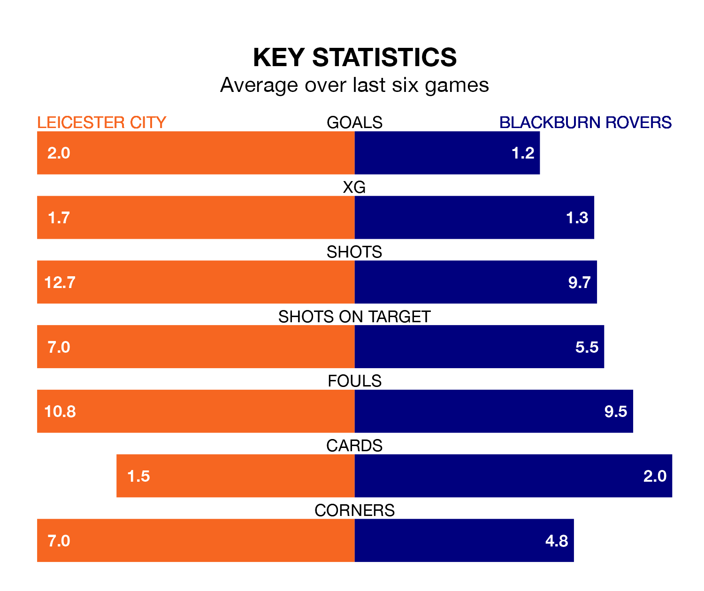

Leicester City are heavy favourites to keep all three points at home in Saturday lunchtime's kick-off against Blackburn Rovers.
The Foxes, who sit top of EFL Championship with 45 games played, are priced at 1.6 to seal victory at the King Power Stadium.
Sitting 18 places and 47 points behind them in the table, Blackburn are 4.5 to win with *Betting Company*, while the draw is at 4.4.
With 89 goals in 45 games so far this season, Leicester are the league's second-highest scorers with 2.0 goals per game. And they are conceding fewer than average, letting in 39 goals at a rate of 0.9 per game.
Blackburn, meanwhile, are average scorers, with 1.3 goals per game. They have conceded 1.6 goals per game.
In Samuel Szmodics, Rovers have the league's sharpest shooter so far this season. He has notched 25 goals in 43 appearances.
His goal rate of one every 153 minutes is slightly quicker than that of Jamie Vardy, City's top scorer with a goal every 94 minutes, and a total of 18 goals in 34 games.
The Foxes are in reasonable form in EFL Championship, with four wins and two losses from their last six games.
With two wins and two draws over that period, the visitors' form is worse – they have taken eight points from 18, compared to the home side's 12.
Over the last two years, Leicester and Blackburn have played each other twice. They won one each.
Their last meeting was on October 1, when Leicester won 4-1 away.
Leicester's last match was on Monday, a 3-0 win against Preston North End, with Vardy (two) and Kasey McAteer getting the goals for the Foxes.
Blackburn drew 0-0 with Coventry City last time out, on Saturday.
Updated: 12:00 (UTC), 02/05/24